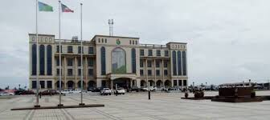

Воля этого агентства ООН в Малабо была передана в этот четверг вице-президенту Республики во время аудиенции, предоставленной постоянному представителю Программы развития Организации Объединенных Наций Элси Лоуренс Чонун.
Во время встречи официальный представитель ООН также сообщил Нгеме Обианг Манге о желании ее учреждения поддержать видение исполнительной власти Малабо в ее национальной программе социально-экономического развития «Горизонт 2035», уделяя особое внимание экономической диверсификации.
Экваториальная Гвинея и ПРООН укрепляли связи в различных областях на протяжении нескольких десятилетий, и эта встреча между членом правительства и Лоуренсом Чонуном послужила основой для общего обзора состояния отношений, которые объединяют Малабо с ООН.
Оппозиция Экваториальной Гвинеи требует отставки правительства за столом диалога. Андрес Эсоно, лидер оппозиционной партии «Конвергенция за социал-демократию» (CPDS), призвал к отставке правительства президента Теодоро Обианга, который находится у власти 39 лет.
